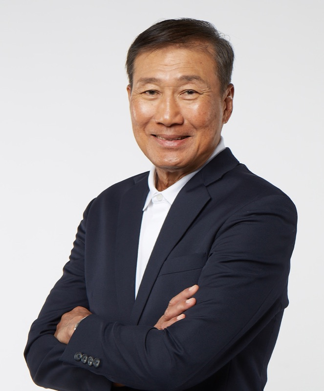

Ko Chee Wah
Executive Chairman & Co-Founder
Mr. Ko Chee Wah is the Executive Chairman and co-founder of the Group, providing strategic mentorship and guidance on business direction and development. Mr. Ko was appointed as a Director of our Company on 6 January 2023 and was later redesignated as Executive Chairman on 30 March 2026.
With over 30 years of experience in the MICE industry, Mr. Ko brings deep industry expertise and an extensive global network. Prior to founding the Group, Mr. Ko was the co-founder, Executive Director and Group Managing Director of Cityneon Holdings Pte. Ltd., where he led the origination and execution of major international projects, including Universal Studios Singapore at Resorts World Sentosa, the Nanjing Youth Olympic Games 2014, and the Southeast Asian Games 2015. Earlier in his career, he held management roles at Sim Lim Company (Pte) Limited and Wing Tai Enterprises Pte. Ltd.
Mr. Ko holds a Bachelor of Business Administration from the University of Singapore, now known as the National University of Singapore.